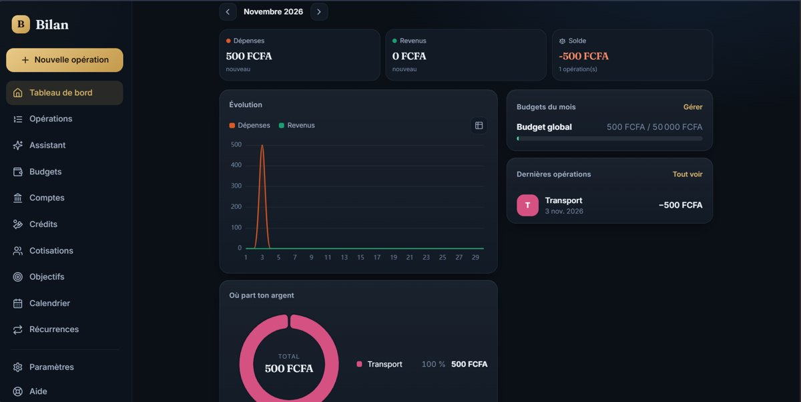

Prêt à être déployé
Bilan — application de gestion de dépenses
Un outil pour visualiser et suivre les dépenses, les revenus, les cotisations et les différents comptes : tableau de bord mensuel, budgets, crédits, objectifs, opérations récurrentes et répartition des dépenses par poste. Un assistant IA y est intégré : il répond aussi bien aux questions propres à la gestion de l'application qu'aux questions d'ordre général.
Suivi budgétaireAssistant IA intégréVisualisationBudgets & objectifs